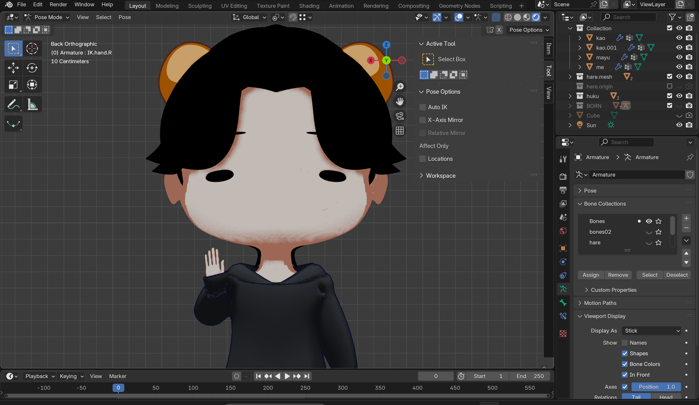
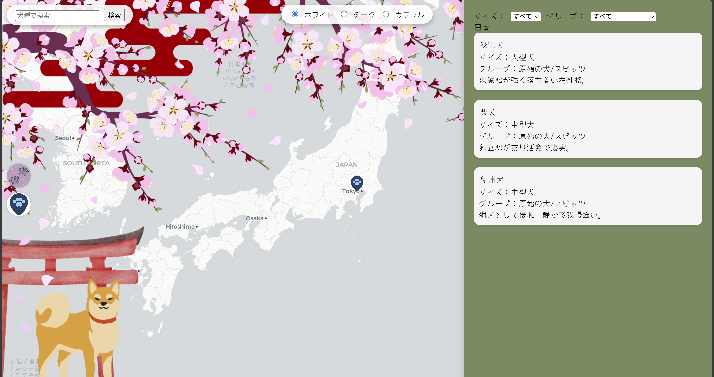
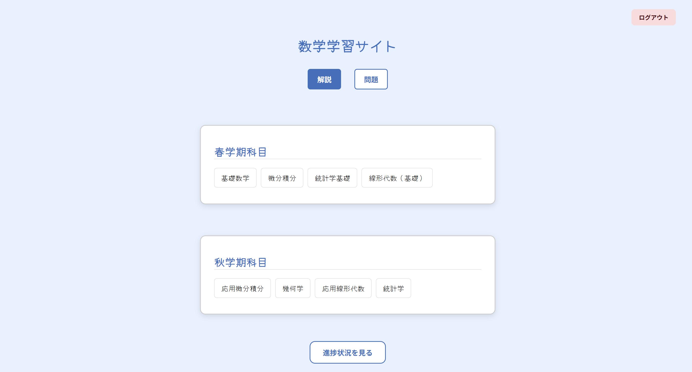
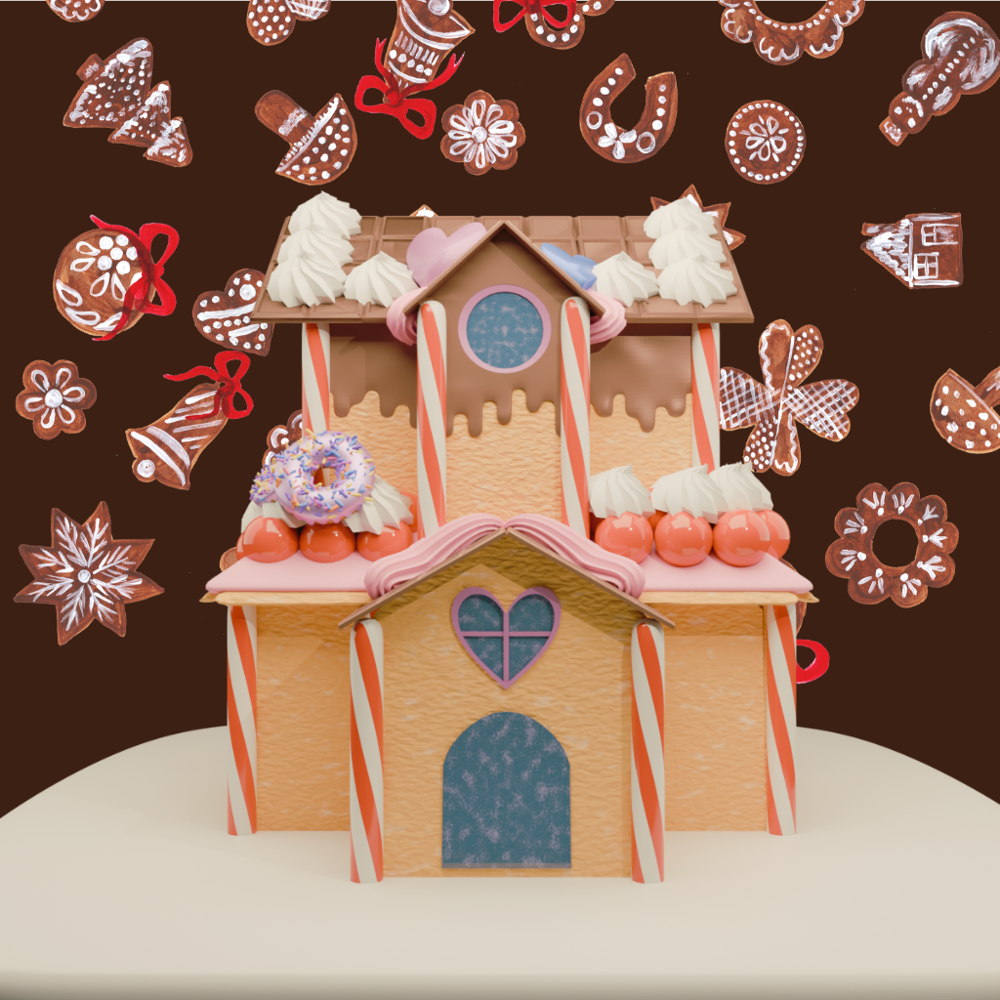

About This Portfolio
このサイトでは、大学在学中に取り組んだ制作・学習内容を時系列で整理し、 「何をどの文脈で学び、どう応用してきたか」を可視化することを目的として制作しました。 開発面ではまだまだ未熟で経験も少ないですが、今後も
Skills & Learning
1年 秋｜Data Analysis
R/stata/Pythonを中心に学習。 データから意味を読み取り、分析する力を養った。
2年 春｜Database / Backend
UIUXやGISをサイトを作りながら学習。 ユーザーが使いやすいデザインを意識して作成。
2年 秋｜Design / Web
グラフィックデザインやデータベースの基礎を学習。 Adobeを使用した動画編集や画像編集を経験。
Works

1年 春｜Blender
人物モデリング
学園祭での出し物で3Dキャラクターを制作。

2年 春｜GIS / Web
犬の原産国マップ
GISを用いたデータ可視化とWeb表現。

2年 春｜UI / UX
学習支援サイト
工学部内で学習経験がない学生向けの学習サイトを作成。

2年 春｜Blender
お菓子の家をモデリング
ポップでカラフルな世界観を意識し、キャンディやクッキーをモチーフにしたお菓子の家を3Dモデリング。